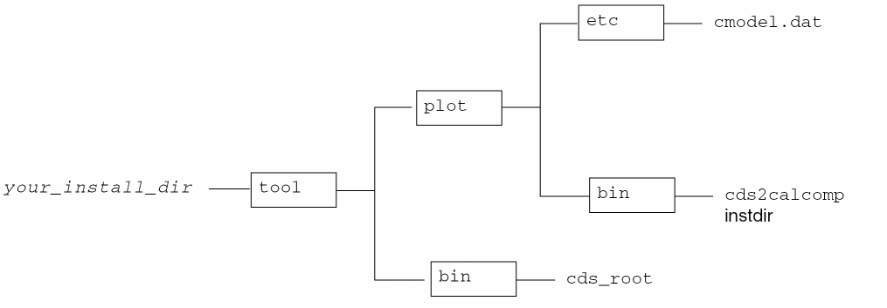

3
Setting Up CalComp Plotters
This chapter discusses the following topics:
- Configuring the Spooling System
- Setting Up Cadence Plotting Services Software
- Customizing Colors, Lines, and Stipple Patterns
- More about CalComp Plotting
- Troubleshooting CalComp Plotting
Configuring the Spooling System
Your Cadence Plotting Services software can plot on CalComp electrostatic plotters that accept Format 907 Plotter Controller Interface (PCI) data through serial ports and parallel Centronics ports.
You set up a plotter the same way you set up a printer. Each spooling system is somewhat different.
Before configuring the spooling system for your plotter,
- Identify the workstation to be the plot server
- Identify the workstations from which users will plot
- Attach the plotter to the plot server using a Centronics parallel interface or an RS-232-C interface
If the plot server will only be generating the 907 PCI data from the CPIF (it will not be generating the CPIF), make the necessary software available.
If the software is not on the plot server, do one of the following:
-
Copy the minimal Cadence hierarchy to the plot server.
The hierarchy can be on any accessible file server. The files must be correctly installed and set up for plotting to work.
Figure 3-1 Minimal CalComp Hierarchy - Mount the software from the file server on which it is located.
If users will be plotting from the plot server (local plotting), you only set up the plot server. If users will be plotting from other workstations (plotting remotely), you must set up the plot server and the clients.
Setting Up the Plot Server
Setting Up the SunOS Plot Server
Use the parallel port for plotting if your plot server and your plotter have parallel ports. This section describes hardware handshaking for serial plotters. Your plotter or operating system documentation might have more information.
To set up the SunOS plot server,
-
Log in as
rooton the plot server. -
Verify that your file system has enough disk space for a temporary directory.
The software copies the CPIF data to a temporary directory so the temporary directory might need a large amount of disk space. A large design might require more than 200 megabytes.
If the plot server will also be a client, the plotting temporary directory also stores the temporary 907 PCI files. The default location is/usr/tmp.
If your system does not have enough space, do one of the following:-
Specify a different directory in the
tmpdirfield in the.cdsplotinitfile
See “Setting Up Cadence Plotting Services Software”. -
Link
/usr/tmpto another file system
-
Specify a different directory in the
You can set up the temporary directory in any location on the network. The directory must have rwxrwxrwx (777) permissions and, preferably, at least 200 megabytes of disk space.
-
Copy your existing
/etc/printcapfile.cp /etc/printcap /etc/printcap.old
-
Create the queue device (
printcapentry).
If you are connecting a CalComp plotter directly to a plot server, edit the/etc/printcapfile on the plot server. For example, for a CalComp plotter connected to this workstation, add a description similar to the following:cc|Local CalComp plotting:\ :lp=/dev/ttya:\ :sh:mx#0:\ :sd=/usr/spool/cc:\ :lf=/usr/adm/lpd-errs:\ :br#38400:ms=crtscts:\ :if=
This entry sets the plotter device toyour_install_dir/tools/plot/bin/cds2calcomp:/dev/ttya, suppresses job headers and form feeds, sets an unlimited print file size, and sets the spool directory to/usr/spool/cc. It tellslpdto send error output to the standard error file/usr/adm/lpd-errs. The last line specifies the filter name.
The plotter uses theiffilter because the input data is text. The filter is started once per job.
The spooling system runscds2calcompto convert the CPIF data to CalComp format. The.cdsplotinitfile controls allcds2calcompoptions.
See theprintcapman page for complete information. Your plotter documentation might specify the appropriate entry for your operating system. -
Create the queue (spool directory).
Type commands similar tocd /usr/spool mkdir
plotter_name is the name specified for the spooling system. For example, if you specifiedplotter_namechown daemon.daemonplotter_namechmod 755plotter_name/usr/spool/ccas the spool directory in the/etc/printcapentry above, create theccspool directory by typingcd /usr/spool mkdir cc chown daemon.daemon cc chmod 755 cc
-
Start the printer queue.
lpc start
plotter_namelpc enableplotter_name -
Verify the printer daemon.
ps -aux | grep lpd
-
If the daemon is not running, start it.
/usr/lib/lpd
-
Verify the plotter status.
lpc status
If the queue is empty, usually the system returnsplotter_nameNo daemon present
-
(Optional) Test the queuing command.
You can test the queuing command from the configuration utility.
See “Troubleshooting CalComp Plotting” and Chapter 7, “Troubleshooting,” if necessary.
If you are plotting locally, go on to “Setting Up Cadence Plotting Services Software”.
If you are plotting remotely, go on to “Setting Up the Clients”.
Setting Up the Solaris Plot Server
Use the parallel port for plotting if your plot server and your plotter have parallel ports. This section describes hardware handshaking for serial plotters. Your plotter or operating system documentation might have more information.
To set up the Solaris plot server,
-
Log in as
rooton the plot server. -
Verify that your file system has enough disk space for a temporary directory.
The software copies the CPIF data to a temporary directory so the temporary directory might need a large amount of disk space. A large design might require more than 200 megabytes.
If the plot server will also be a client, the plotting temporary directory also stores the temporary 907 PCI files. The default location is/usr/tmp.
If your system does not have enough space, do one of the following:-
Specify a different directory in the
tmpdirfield in the.cdsplotinitfile.
See “Setting Up Cadence Plotting Services Software”. -
Link
/usr/tmpto another file system
-
Specify a different directory in the
You can set up the temporary directory in any location on the network. The directory must have rwxrwxrwx (777) permissions and, preferably, at least 200 megabytes of disk space.
-
Use
lpadminto create the queue and queue device.lpadmin -p
Replace plotter_name with the name of the plotter, device with the name of the device (such asplotter_name-v/dev/device-iyour_install_dir/tools/plot/etc/cclpfiltertty00orparallel_plot), and your_install_dir with the directory in which the Cadence software is installed. -
Create the
cclpfilterscript.
Use your_install_dir/tools/plot/samples/calcomp/cclpfilteras a guide.
Replace device with the name of the queue device and your_install_dir with the directory in which the Cadence software is installed.#!/bin/sh # Cadence Design Systems 1995 # Use this lp interface for cds2calcomp and System V # Build log file information log=/usr/spool/lp/log # # Echo arguments to log file echo "\n\n$*" >>${log} echo "start:‘date‘" >>${log} exec 2 >>${log} reqid=$1 user=$2 title=$3 copies=$4 options=$5 shift;shift;shift;shift;shift files=$* # # Set RS-232C serial options if port is serial. # Comment out otherwise. # if [ -t 1 ] then # Change
baud_rateto the appropriate number used by plotter sttybaud_rate-opost -onlcr -ocrnl -parenb cs8 crts \ -istrip -clocal tabs ctsxon<&1 2>/dev/null fi for file in ${files} do # Changeyour_install_dirto Cadence software installation directoryyour_install_dir/tools/plot/bin/cds2calcomp -inputfile ${file} -h`hostname` -n ${user}done echo "done: `date`">>${log} exit 0
-
Start the printer queue.
accept
plotter_nameenableplotter_name -
Verify the printer daemon.
/usr/bin/lpstat -r
-
If the daemon is not running, start it.
/usr/lib/lpsched
-
Verify the plotter status.
lpstat -o
plotter_name -
(Optional) Test the queuing command.
You can test the queuing command from the configuration utility.
See “Troubleshooting CalComp Plotting” and Chapter 7, “Troubleshooting,” if necessary.
If you are plotting locally, go on to “Setting Up Cadence Plotting Services Software”.
If you are plotting remotely, go on to “Setting Up the Clients”.
Setting Up the HP-UX Plot Server
Use the parallel port for plotting if your plot server and your plotter have parallel ports. This section describes hardware handshaking for serial plotters. Your plotter or operating system documentation might have more information.
To set up the HP-UX plot server,
-
Log in as
rooton the plot server. -
Verify that your file system has enough disk space for a temporary directory.
The software copies the CPIF data to a temporary directory so the temporary directory might need a large amount of disk space. A large design might require more than 200 megabytes.
If the plot server will also be a client, the plotting temporary directory also stores the temporary 907 PCI files. The default location is/usr/tmp.
If your system does not have enough space, do one of the following:-
Specify a different directory in the
tmpdirfield in the.cdsplotinitfile.
See “Setting Up Cadence Plotting Services Software”. -
Link
/usr/tmpto another file system
-
Specify a different directory in the
You can set up the temporary directory in any location on the network. The directory must have rwxrwxrwx (777) permissions and, preferably, at least 200 megabytes of disk space.
-
Use
lpadminto create the queue and queue device.lpadmin -p
Replace plotter_name with the name of the plotter, device with the name of the device (such asplotter_name-v/dev/device-iyour_install_dir/tools/plot/etc/cclpfiltertty00orparallel_plot), and your_install_dir with the directory in which the Cadence software is installed. -
Create the
cclpfilterscript.
Use your_install_dir/tools/plot/samples/calcomp/cclpfilteras a guide.
Replace device with the name of the queue device and your_install_dir with the directory in which the Cadence software is installed.#!/bin/sh # Cadence Design Systems 1995 # Use this lp interface for cds2calcomp and System V # Build log file information log=/usr/spool/lp/log # # Echo arguments to log file echo "\n\n$*" >>${log} echo "start:‘date‘" >>${log} exec 2 >>${log} reqid=$1 user=$2 title=$3 copies=$4 options=$5 shift;shift;shift;shift;shift files=$* # # Set RS-232C serial options if port is serial. # Comment out otherwise. # if [ -t 1 ] then # Change
baud_rateto the appropriate number used by plotter sttybaud_rate-opost -onlcr -ocrnl -parenb cs8 crts \ -istrip -clocal tabs ctsxon<&1 2>/dev/null fi for file in ${files} do # Changeyour_install_dirto Cadence software installation directoryyour_install_dir/tools/plot/bin/cds2calcomp -inputfile ${file} -h`hostname` -n ${user} done echo "done: `date`">>${log} exit 0 -
Start the printer queue.
accept
plotter_nameenableplotter_name -
Verify the printer daemon.
/usr/bin/lpstat -r
-
If the daemon is not running, start it.
/usr/lib/lpsched
-
Verify the plotter status.
lpstat -o
plotter_name -
(Optional) Test the queuing command.
You can test the queuing command from the configuration utility.
See “Troubleshooting CalComp Plotting” and Chapter 7, “Troubleshooting,” if necessary.
If you are plotting locally, go on to “Setting Up Cadence Plotting Services Software”.
If you are plotting remotely, go on to “Setting Up the Clients”.
Setting Up the AIX Plot Server
Use the parallel port for plotting if your plot server and your plotter have parallel ports. This section describes hardware handshaking for serial plotters. Your plotter or operating system documentation might have more information.
To set up the AIX plot server,
-
Log in as
rooton the plot server. -
Verify that your file system has enough disk space for a temporary directory.
The software copies the CPIF data to a temporary directory so the temporary directory might need a large amount of disk space. A large design might require more than 200 megabytes.
If the plot server will also be a client, the plotting temporary directory also stores the temporary 907 PCI files. The default location is/usr/tmp.
If your system does not have enough space, do one of the following:-
Specify a different directory in the
tmpdirfield in the.cdsplotinitfile
See “Setting Up Cadence Plotting Services Software”. -
Link
/usr/tmpto another file system
-
Specify a different directory in the
You can set up the temporary directory in any location on the network. The directory must have rwxrwxrwx (777) permissions and, preferably, at least 200 megabytes of disk space.
-
Use
smitto create the queue and queue device.
smitmodifies/etc/qconfig. - Choose Devices – Printer/Plotter – Manage Local Printer Subsystem – Local Printer Queues – Add a Local Queue.
-
Fill out the form.
Name of queue to add cc5835
# Give the queue a meaningful name
Activate the queue yes
Will this become the default queue? no
Queue discipline first come first served
Accounting file pathname
Name of device to add cc5835D
# Give the queue a meaningful name
Backend output file pathname
# device file for printer, such as /dev/tty0
Access mode both read and write
Backend program pathname
/usr/lpd/piobe# Create the script as described below
# and enter its pathname
Number of form feeds prior
to printing 0
Print header pages never
Print trailer pages never
Align page between files no
-
Look at the entry in
/etc/qconfig.
It might be similar tocc5835: device = cc5835D up = TRUE cc5835D: backend =
The device named in the first portion must be the device defined in the second portion of the entry.your_install_dir/tools/plot/etc/ccfilter access = both -
Force the system to see the changes in
/etc/qconfig.enq -d
-
Create the
ccfilterscript.
Use your_install_dir/tools/plot/samples/calcomp/ccfilteras a guide. Replace your_install_dir with the directory in which the Cadence software is installed.#!/bin/sh # ccfilter: AIX calcomp backend # Set RS-232-C serial options if port is serial. Comment out # otherwise. # Uncomment the following lines if the device is a serial port # and set the baud rate (replace 38400) as needed. This sets up # request to send/clear to send hardware handshaking. # stty disp posix<&1 stty add rts<&1 2>/dev/null stty 38400 host=‘uname -n‘ # for file in $* do
your_install_dir/tools/plot/bin/cds2calcomp -inputfile $file \ -h $host -n $user done exit 0 -
Start the printer queue.
enable
plotter_name -
Verify the printer daemon.
ps -edaf | grep qdaemon
-
If the daemon is not running, start it.
/etc/qdaemon
-
Verify the plotter status.
enq -q -P
plotter_name -
If an AIX plot server will be receiving plot jobs from a SunOS system, you must start
lpdon the plot server.startsrc -s lpd
-
(Optional) Test the queuing command.
You can test the queuing command from the configuration utility.
See “Troubleshooting CalComp Plotting” and Chapter 7, “Troubleshooting,” if necessary.
If you are plotting locally, go on to “Setting Up Cadence Plotting Services Software”.
If you are plotting remotely, go on to “Setting Up the Clients”.
Setting Up the Clients
Setting Up the SunOS Clients
You must set up the client workstations in one of two ways. The client can NFS-mount the plot server and then plot, or you can set up the client by following the steps below.
-
Log in as
rooton the client. -
Copy your existing
/etc/printcapfile.cp /etc/printcap /etc/printcap.old
-
Create the queue device (
printcapentry).
Edit the/etc/printcapfile on the client workstation. For example, add a CalComp entryccto the/etc/printcap.cc|Remote CalComp plotting:\ :lp=:sf:mx#0:\ :sd=/usr/spool/cc:\ :lf=/usr/adm/lpd-errs:\ :rp=cc:rm=
Theplot_server:rpentry is the name of the plotter on the plot server, in this casecc. Thermentry is the name of the plot server.
See theprintcapman page for complete information. Your plotter documentation might specify the appropriate entry for your operating system. -
Create the queue (spool directory).
Type commands similar tocd /usr/spool mkdir
plotter_name is the name specified for the spooling system. For example, for a plotter known asplotter_namechown daemon.daemonplotter_namechmod 755plotter_namecc, at a UNIX prompt, typecd /usr/spool mkdir cc chown daemon.daemon cc chmod 755 cc
-
Set up the temporary directory.
The plotting temporary directory stores the CPIF data. The default location is/usr/tmp, and it is usually not large enough to store the CPIF data.
You can set up the temporary directory in one of the following ways:-
Specify a different directory in the
tmpdirfield in the.cdsplotinitfile -
Link
/usr/tmpto another file system
You can set up the temporary directory in any location on the network. The directory must haverwxrwxrwx (777)permissions and, depending on the designs plotted, at least 200 megabytes of disk space. -
Specify a different directory in the
-
If the Cadence Plotting Services software is not on the client, mount the software from the file server on which it is located.
For more information, see Appendix B, “SunOS Spooling Systems.” -
Start the printer queue.
lpc start
plotter_namelpc enableplotter_name -
Verify the printer daemon.
ps -aux | grep lpd
-
If the daemon is not running, start it.
/usr/lib/lpd
-
Verify the plotter status.
lpc status
If the queue is empty, usually the system returnsplotter_nameNo daemon present
-
(Optional) Test the queuing command.
You can test the queuing command from the configuration utility. -
Repeat these steps on each client.
If you want to test the setup before you repeat these steps on each client, you must set up the Cadence Plotting Services software.
Proceed to “Setting Up Cadence Plotting Services Software”.
Setting Up the Solaris Clients
You must set up the client workstations in one of two ways. The client can NFS-mount the plot server and then plot, or you can set up the client by following the steps below.
-
Log in as
rooton the client. -
Use
admintoolto create the queue and queue device. -
Set up the temporary directory.
The plotting temporary directory stores the CPIF data. The default location is/usr/tmp, and it is usually not large enough to store the CPIF data.
You can set up the temporary directory in one of the following ways:-
Specify a different directory in the
tmpdirfield in the.cdsplotinitfile -
Link
/usr/tmpto another file system
You can set up the temporary directory in any location on the network. The directory must haverwxrwxrwx (777)permissions and, depending on the designs plotted, at least 200 megabytes of disk space. -
Specify a different directory in the
- If the Cadence Plotting Services software is not on the client, mount the software from the file server on which it is located.
-
Start the printer queue.
accept
plotter_nameenableplotter_name -
Verify the printer daemon.
/usr/bin/lpstat -r
-
If the daemon is not running, start it.
/usr/lib/lpsched
-
Verify the plotter status.
lpstat -o
plotter_name -
(Optional) Test the queuing command.
You can test the queuing command from the configuration utility. -
Repeat these steps on each client.
If you want to test the setup before you repeat these steps on each client, you must set up the Cadence Plotting Services software.
See “Troubleshooting CalComp Plotting” and Chapter 7, “Troubleshooting,” if necessary.
Proceed to “Setting Up Cadence Plotting Services Software”.
Setting Up the HP-UX Clients
You must set up the client workstations in one of two ways. The client can NFS-mount the plot server and then plot, or you can set up the client by following the steps below.
-
Log in as
rooton the client. -
Use
samto create the queue and queue device. -
Set up the temporary directory.
The plotting temporary directory stores the CPIF data. The default location is/usr/tmp, and it is usually not large enough to store the CPIF data.
You can set up the temporary directory in one of the following ways:-
Specify a different directory in the
tmpdirfield in the.cdsplotinitfile -
Link
/usr/tmpto another file system
You can set up the temporary directory in any location on the network. The directory must haverwxrwxrwx (777)permissions and, depending on the designs plotted, at least 200 megabytes of disk space. -
Specify a different directory in the
- If the Cadence Plotting Services software is not on the client, mount the software from the file server on which it is located.
-
Start the printer queue.
accept
plotter_nameenableplotter_name -
Verify the printer daemon.
/usr/bin/lpstat -r
-
If the daemon is not running, start it.
/usr/lib/lpsched
-
Verify the plotter status.
lpstat -o
plotter_name -
(Optional) Test the queuing command.
You can test the queuing command from the configuration utility. -
Repeat these steps on each client.
If you want to test the setup before you repeat these steps on each client, you must set up the Cadence Plotting Services software.
See “Troubleshooting CalComp Plotting” and Chapter 7, “Troubleshooting,” if necessary.
Proceed to “Setting Up Cadence Plotting Services Software”.
Setting Up the AIX Clients
You must set up the client workstations in one of two ways. The client can NFS-mount the plot server and then plot, or you can set up the client by following the steps below.
-
Log in as
rooton the client. -
Use
smitto create the queue and queue device.
The smit utility modifies/etc/qconfig. In the following/etc/qconfigentry, the print queue name iscc, and the queue device isrcc.cc: device = rcc host =
The device named in the first portion must be the device defined in the second portion of the entry.plot_serverrq = cc5835 rcc: backend = /usr/lpd/rembak -
Set up the temporary directory.
The plotting temporary directory stores the CPIF data. The default location is/usr/tmp, and it is usually not large enough to store the CPIF data.
You can set up the temporary directory in one of the following ways:-
Specify a different directory in the
tmpdirfield in the.cdsplotinitfile -
Link
/usr/tmpto another file system
You can set up the temporary directory in any location on the network. The directory must haverwxrwxrwx (777)permissions and, depending on the designs plotted, at least 200 megabytes of disk space. -
Specify a different directory in the
- If the Cadence Plotting Services software is not on the client, mount the software from the file server on which it is located.
-
Start the printer queue.
enable
plotter_name -
Verify the printer daemon.
ps -edaf | grep qdaemon
-
If the daemon is not running, start it.
/etc/qdaemon
-
Verify the plotter status.
enq -q -P
plotter_name -
(Optional) Test the queuing command.
You can test the queuing command from the configuration utility. -
Repeat these steps on each client.
If you want to test the setup before you repeat these steps on each client, you must set up the Cadence Plotting Services software.
See “Troubleshooting CalComp Plotting” and Chapter 7, “Troubleshooting,” if necessary.
Proceed to “Setting Up Cadence Plotting Services Software”.
Setting Up Cadence Plotting Services Software
You must define the plotters for the Cadence Plotting Services software in the plotting configuration file, .cdsplotinit.
You might want to consider several .cdsplotinit files:
-
A system your_install_dir
/tools/plot/.cdsplotinitfile containing all of your plotters -
A group-specific
.cdsplotinitfile in the current working directory -
A user-specific
.cdsplotinitfile in the user’s home directory
The software loads the system file first, the current working directory’s file second, and then the .cdsplotinit file in the user’s home directory. As the software reads the files, plotter definitions are appended to the current list. The software overwrites plotter definitions with the same plotter name, letting users override system settings.
This section describes the .cdsplotinit file for CalComp plotters. CalComp plotters use the features listed in “Summary of Features”.
CalComp plotters can use an optional postprocessing UNIX shell script, possibly to transfer the plotter-ready PCI data (plot_file) to the plotter. The cds2calcomp script executes this script (script_name) with any arguments that the script requires as script_name plot_file.
For example, you can write a script similar to the one below to move the plot to the remote plot server (plot_server).
#!/bin/sh
/usr/ucb/rcp $1plot_server:/usr/tmp
rm -f $1
exit 0
A script similar to the one below moves the plot to the remote plot server (plot_server) and plots it on plotter_name.
#!/bin/sh
/bin/cat $1 | rshplot_serverlpr -Pplotter_namerm -f $1
exit 0
The moveplot script might be similar to
#!/bin/sh
#moveplot
/bin/mv $1 $2
exit 0
After you create your script, you specify the script (script_name) on the following line in the .cdsplotinit file:
:script=script_name:\
You can specify where to put the file, moveplot above, with the script command by adding an asterisk (*) to the command:
:script=moveplot * *.save:\
The system executes the command as
moveplot /usr/tmp/cccxxxx /usr/tmp/cccxxxx.save
cccxxxx is the 907 PCI data file.
Configuring the Plotter with the Utility
To create or modify the .cdsplotinit configuration file, use the plotconfig utility to define the plotters if the X Window System or OpenWindows is running. If neither of these windowing systems is running, follow the procedures in “Configuring the Plotter without the Utility”.
-
Verify that your_install_dir
/tools/binand your_install_dir/tools/plot/binare in your search path.
your_install_dir is the directory in which the Cadence products are installed, such as/cds. If your workstation is set up correctly, typingcds_rootreturns your_install_dir. Ifcds_rootdoes not return the path, check your search path or see your system administrator. -
Start the plotter configuration utility by doing one of the following:
-
At the UNIX prompt on a color terminal, type
plotconfig
-
At the UNIX prompt on a monochrome terminal, type
plotconfig -bw
For information, click the Help button. For information about a specific topic (or field), move your cursor over the field and pressF1or theHelpkey. Press the key again (over the field) to close the help window, or click Close in the help window. -
At the UNIX prompt on a color terminal, type
-
Select the plotter configuration file to modify.
The Cadence® applications read the.cdsplotinitfiles sequentially in this order when the applications start:
The software appends the plotters to a list of available plotters and overwrites plotter definitions with the same plotter name. The last plotter defined is the definition the software uses.
-
In the List of Plotter Models list box, double-click the plotter model you want to put in the file.
The plotter model is added to the List of Installed Plotters list box. If you add several plotters of the same model, each plotter is numbered sequentially. For example,5835 5835(1) 5835(2)
- In the List of Installed Plotters list box, click the plotter model.
-
Click Setup.
The Plotter Setup form appears.
For information, click the Help button. For information about a specific topic (or field), move your cursor over the field and pressF1or theHelpkey. Press the key again (over the field) to close the help window, or click Close in the help window. - Fill in the form.
- Click OK.
-
In the Cadence Plotter Configuration form, click Queue.
The Plotter Queue form appears.
For information, click the Help button. For information about a specific topic (or field), move your cursor over the field and pressF1or theHelpkey. Press the key again (over the field) to close the help window, or click Close in the help window. - Fill in the form.
- Click Test to test the queue command.
- Click OK.
-
(Optional) Add the name of the postprocessing script to the
.cdsplotinitfile.
Follow the steps in “Configuring the Plotter without the Utility”. - Repeat these steps to set up any other plotter configuration file.
-
In the Cadence Plotter Configuration form, click Quit.
If Quit is grayed out, close all windows related to the plotconfig utility.
Configuring the Plotter without the Utility
To create or modify the .cdsplotinit configuration file without the utility,
-
Create a
.cdsplotinitfile in your home directory.
You can use an editor, such asvi.vi ~/.cdsplotinit
You must specify your site-specific information.
The your_install_dir/tools/plot/etc/cdsplotinitfile lists the supported plotter models. The header of this file lists the CPS version with which the file is associated. The your_install_dir/tools/plot/samples/cdsplotinit.samplefile lists sample plotters with complete entries; the entries might not be accurate for your site. -
Copy the entry for your plotter model from your_install_dir
/tools/plot/etc/cdsplotinitto your.cdsplotinitfile.
For example, if you are setting up a CalComp 400-dpi black-and-white plotter using rolls of paper, the entry might be similar to5725:\ :manufacturer=Calcomp:\ :type=intBWC:\ :maximumPages#10:\ :resolution#400:\ :compress:\ :residentFonts:\ :instdir=/usr/cds:\ :tmpdir=/usr/tmp:\ :paperSize="25 inches wide" 0 9408:
The entry for a 400-dpi color plotter might be5835:\ :manufacturer=Calcomp:\ :type=intCLRC:\ :maximumPages#10:\ :resolution#400:\ :compress:\ :residentFonts:\ :instdir=/usr/cds:\ :tmpdir=/usr/tmp:\ :white#8:black#1:red#6:yellow#4:green#7:cyan#2:blue#5:magenta#3:\ :paperSize="35 inches wide" 0 13696:
If your plotter is not in your_install_dir/tools/plot/etc/cdsplotinit, you might still be able to use it if you modify an existing entry from the same manufacturer. -
Add the name of the plotter as the Cadence software should display it.
Add the name and a vertical bar (|) to the beginning of the plotter model line, leaving no spaces on the line. If you do not specify a menu name, the list of plotters does not recognize this plotter.
Follow these guidelines when naming your plotter:-
Do not use these characters in the plotter name:
colon (:) equal sign (=) double quotes (") backslash (\) vertical bar (|) -
Do not leave any spaces at the beginning or the end of the name.
-
Do not change plotter_model (
5835in the example below). You can only use plotter models recognized by Cadence Plotting Services software.
-
Do not use these characters in the plotter name:
For example, if you want the software to display the plotter as CalComp 5835 Color, add the name to the first line, followed by a vertical bar (|), leaving no spaces.
CalComp 5835 Color|5835:\
For the Concept board designer, because it allows no spaces in the name, type
CalComp_5835_Color|5835:\
In this example, the Cadence software will display
CalComp 5835 Color
CalComp_5835_Color
-
Add the spooling information for the plotter.
Use the spooling commands for your operating system. The table lists the spooling entries for a plotter (identified ascc).
Operating System Spool Query Remove -
Edit
instdir.
Type the full path to the Cadence installation directory on the plot server.:instdir=
Use the your_install_dir, such asyour_install_dir:\/usr/cds. Do not use your_install_dir/tools/plot.
The path must be local to the plot server. If it is on another workstation, that directory must be mounted on the plot server.
Ifinstdirpoints to a directory that does not exist, CPS uses the directory returned by thecds_rootcommand in your search path. -
Edit the name of the temporary directory (
tmpdir).:tmpdir=/usr/tmp:\
This directory stores the temporary data files. The default is/usr/tmp. -
(Optional) Edit the name of the script (
script).
Specify the full path to prevent the software from looking for the file in your_install_dir/tools/plot/bin.:script=path/
You can write a script to move the PCI data to any location on the network or to run other script files.script_name:\ -
(Optional) To send uncompressed data to the plotter, remove the
compressline.:compress:\
-
(Optional) To use the printer’s resident fonts instead of the stroked fonts displayed on the screen, type
:residentFonts:\
-
(Optional) Edit the colors.
The plotter maps solid colors (for filling shapes) directly from RGB values but uses the index method, as on a pen plotter, for line and stipple pattern colors. The following line maps RGB colors to eight index colors. Usually, you do not change the line.:white#8:black#1:red#6:yellow#4:green#7:cyan#2:blue#5:magenta#3:\
The software maps the colors to the closest color. For example, light green, forest green, and army green map to green.
- Remove the backslash from the last line.
-
Verify each line of the plotter entry.
The complete entry for a 400-dpi CalComp 5835 plotter identified asccin the/etc/printcapfile and asCalComp 5835 Coloron the application’s menu, and using a 36-inch paper roll in the SunOS environment might beCalComp 5835 Color|5835:\ :manufacturer=Calcomp:\ :spool=lpr -Pcc:\ :query=lpq -Pcc:\ :remove=lprm -Pcc $3:\ :type=intCLRC:\ :maximumPages#10:\ :resolution#400:\ :compress:\ :residentFonts:\ :instdir=/usr/cds:\ :tmpdir=/usr/tmp:\ :paperSize="35 inches wide" 0 13696:
Remove spaces that occur - Save and exit the file.
-
(Optional) Relocate the file.
The Cadence applications read the.cdsplotinitfiles in this sequence when the applications start:
The software overwrites plotter definitions with the same plotter name; the last plotter defined is the definition the plotter uses.
Testing the Configuration File
You can test the queuing command from the plotconfig utility. You test the .cdsplotinit file by plotting a design from a Cadence application.
- Start the Cadence application.
-
Print a design to test the
.cdsplotinitfile.
Follow the plotting procedure in your Cadence application’s user guide. If the plot does not come out, see “Troubleshooting CalComp Plotting” and Chapter 7, “Troubleshooting.”
Customizing Colors, Lines, and Stipple Patterns
On all supported color plotters, Cadence Plotting Services software selects colors by either matching or mapping colors to red-green-blue (RGB) color values.
| Color Plotter | RGB-Matched Color | Mapped Colors |
|---|---|---|
The software tries to match RGB color values when you match the paint colors. To match an RGB value, plotters use patterns of primary color dots. The color matching works correctly only in solid-filled shapes, like the inside of a rectangle. A plotting area can be too small to accommodate these patterns (as in lines or small shapes) so the color cannot match the RGB values. Because stipple-filled shapes already contain patterns, Cadence Plotting Services software limits stipple patterns on some plotters to the eight primary colors because otherwise the RGB color patterns are overridden with unpredictable results.
The software maps RGB color values to the eight keyword colors identified by index values in the .cdsplotinit entry instead of producing patterns of color dots. The plotter uses the appropriate color index.
| Number | Color |
|---|---|
For example, light green, forest green, and army green map to green.
The Cadence application doing the plotting determines the line or stipple pattern. Depending on your Cadence application, you might be able to customize the plotter’s lines, colors, and stipple patterns. Follow the plotting procedure in your Cadence application’s user guide.
More about CalComp Plotting
The Cadence Plotting Services software creates Cadence Plotting Intermediate Format (CPIF) and converts it to CalComp PCI data format before sending the data to the plotter.
Plotter Configurations on the Network
You can plot locally or remotely. In the following figure, client 1 plots locally; clients 2 and 3 plot remotely. The dotted line represents the CPIF data sent to the plot server.
- A Cadence-supported hardware platform
- Access to Figure 3-1.
Each client must be a Cadence-supported hardware platform.
How the Plot Server and the Plot Client Interact
The following figure illustrates how you plot in SunOS. The events are similar in HP-UX and AIX, but the daemons and filenames are different.
In SunOS, the software executes in this sequence when you plot from a client workstation.
- You fill out the plotting forms on a client and submit the plot job.
-
The Cadence Plotting Services software generates a
plaxxxxxCPIF file in a temporary directory. It deletes this file after queuing the data to the spool area. -
The UNIX spooling command, such as
lpr, queues the CPIF data to a spool directory, such as/usr/spool/cc. -
For remote plotting, the
lpdprinter daemon moves the CPIF data from the client’s spool directory to the plot server’s spool directory,/usr/spool/cc. -
On the plot server, the printer daemon starts
cds2calcompand converts the CPIF data to CalComp 907 PCI format data. -
The
lpddaemon deletes the spooling data after the plot completes.
The Cadence Plotting Services software that generates the PCI data uses several binary executables, driver configuration files, plotter data and pattern files, and other system files. Executables are in your_install_dir/tools/plot/bin.
Cadence Plotting Services software uses the following files.
| File | Description |
|---|---|
|
Cadence program that identifies the installation path of the Cadence software |
cds2calcomp
The printer daemon executes cds2calcomp, which
- Reads the header of the CPIF data to find the location of the Cadence Plotting Services software, the temporary directory, and the CalComp plotter model
- Converts the CPIF data to CalComp format plot data
- Outputs the plot data to the CalComp plotter or generates a CalComp format data file on the disk
- Starts the postprocessing script, if one is specified
- Depending on the application, creates a plotting log file and mails it to the user
cds2calcomp software recognizes compressed and uncompressed format. You do not need to specify it.
You can use these cds2calcomp options.
cmodel.dat
The beginning of the cmodel.dat file describes plotter characteristics you can specify for your plotter:
- Software level
- Units of measurement, such as inches or centimeters
- Plotter stepsize
- Plotter width, such as 24 or 36 inches
- Existence of a paper cutter
- Plotter port communications
- Use of checksums
- Start and stop characters
Running cds2calcomp as a Standalone Program
You can run cds2calcomp as a standalone program several ways, but you must use the -normalinfo option.
-
To create a CalComp format data file on the disk from a CPIF file (
CPIF), type the following command at a UNIX prompt:your_install_dir/tools/plot/bin/cds2calcomp -inputfileinput_file-normalinfo >output_file -
To output a CPIF file (
CPIF) directly to the plotter, type the following command at a UNIX prompt:your_install_dir/tools/plot/bin/cds2calcomp -inputfile CPIF -normalinfo > /dev/ttya
cds2calcomp software recognizes compressed and uncompressed format. You do not need to specify it.Troubleshooting CalComp Plotting
This section lists several problems specific to CalComp plotters. If these hints do not solve your plotting problem, check
- Troubleshooting Flow Chart
- Step-by-Step Troubleshooting
- Plotting Problems
- Error Messages
- Configuring Spooling Systems
- What Happens When You Send a Design to the Plotter
No CPIF file is generated
The Cadence Plotting Services software generates a plaxxxxx CPIF in the temporary directory and deletes this file after queuing the data to the spool area.
-
Verify the
tmpdirin the.cdsplotinitfile. -
Verify that the temporary directory has
777access permission. - Verify that the temporary directory is large enough.
Plotter uses the wrong installation path
Verify the installdir entry in the .cdsplotinit file. It must point to the Cadence installation path, your_install_dir, on the plot server. If it points to a directory that does not exist, CPS uses the directory returned by the cds_root command in your search path.
Clients do not have enough disk space in /usr/spool
If a client does not have a plotter connected directly, it might run out of disk space because the disk partition containing the plot spool directories in /usr/spool often has minimal disk space.
You can use a different spooling command in the .cdsplotinit file to transfer the plot data directly to the plot server. For example, if
:spool=lpr -Pcc:\
is in your .cdsplotinit file for a CalComp plotter, modify it to read
:spool=rsh plot_server lpr -Pcc:\
Design Framework II pipes plot data to the rsh command, which transfers the data over the network to the lpd on the host plot_server. The lpd on plot_server writes the plot data into the spool directory on plot_server. Your plot server must have sufficient space in its spool directory to accept large plot files.
Plotter uses the wrong temporary directory
Verify the tmpdir in the .cdsplotinit file.
When using the Centronics port on an HP, the design does not plot
Your CalComp plotter might require an alternative hardware handshake protocol.
-
Create an alternative special device file that uses the alternative protocol.
mknod /dev/
Replace device with the name of the new device, such asdevicec 11 0x206005plot_parallel5. - Set up the plot server again using the new device.
When using the Centronics port on an HP, error messages print on the plotter or on the screen.
Your CalComp plotter might require an alternative hardware handshake protocol.
-
Create an alternative special device file that uses the alternative protocol.
mknod /dev/
Replace device with the name of the new device, such asdevicec 11 0x206005plot_parallel5. - Set up the plot server again using the new device.
Return to top